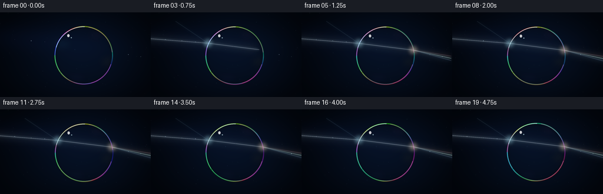
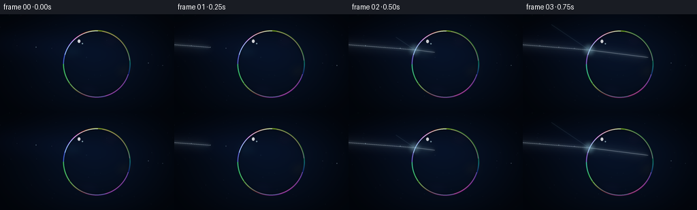
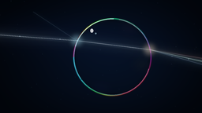

CODING AGENTS AS PIXEL WORLD MODELS
traex/GPT-5.6-Sol · phygen_090
点击播放 · 原生 RGB 像素
逐轮保存的候选
回放视频、检查图与代码变化。
每份候选均可单独播放。实际图片检查记录在下方工具轨迹中。
候选 01播放与检查图
点击播放 · 原生 RGB 像素


展开代码变化
--- 上一保存版本
+++ 本次保存版本
@@ -0,0 +1,195 @@
+from pathlib import Path
+import json, math
+import numpy as np
+from PIL import Image, ImageDraw, ImageFilter
+import artifact_io
+
+ROOT = Path(__file__).resolve().parent
+SPEC = json.loads((ROOT / 'task_spec.json').read_text())
+W,H,N,FPS = SPEC['width'],SPEC['height'],SPEC['frames'],SPEC['fps']
+S = 4
+w,h = W*S,H*S
+rng = np.random.default_rng(90)
+
+# Fixed dust gives the dark studio air depth without visual noise.
+dust = [(float(rng.uniform(0,W)), float(rng.uniform(0,H)), float(rng.uniform(.25,1.0))) for _ in range(60)]
+
+def hsv_rgb(hue, sat, val):
+ # vectorized HSV, ranges 0..1
+ hue = np.mod(hue, 1.0); k = hue*6
+ i = np.floor(k).astype(int); f = k-i
+ p=val*(1-sat); q=val*(1-sat*f); tt=val*(1-sat*(1-f))
+ out=np.zeros(hue.shape+(3,),float)
+ choices=[(val,tt,p),(q,val,p),(p,val,tt),(p,q,val),(tt,p,val),(val,p,q)]
+ for j,c in enumerate(choices):
+ m=(i%6)==j
+ for z in range(3): out[...,z][m]=c[z][m]
+ return out
+
+def rgba_layer(): return Image.new('RGBA',(w,h),(0,0,0,0))
+def P(p): return tuple(int(round(v*S)) for v in p)
+
+def add_screen(base, layer):
+ # Screen gives natural additive light while preserving bright detail.
+ a=np.asarray(base).astype(np.float32)/255
+ b=np.asarray(layer.convert('RGB')).astype(np.float32)/255
+ alpha=np.asarray(layer)[...,3:4].astype(np.float32)/255
+ out=1-(1-a)*(1-b*alpha)
+ return Image.fromarray(np.uint8(np.clip(out*255,0,255)),'RGB')
+
+def draw_glow_line(base, pts, color=(210,235,255), strength=1.0, width=1.0):
+ if len(pts)<2: return base
+ # Wide atmospheric bloom
+ lay=rgba_layer(); d=ImageDraw.Draw(lay)
+ d.line([P(x) for x in pts], fill=(*color,int(65*strength)), width=max(1,int(11*S*width)), joint='curve')
+ lay=lay.filter(ImageFilter.GaussianBlur(8*S*width))
+ base=Image.alpha_composite(base.convert('RGBA'),lay)
+ # Narrow halo
+ lay=rgba_layer(); d=ImageDraw.Draw(lay)
+ d.line([P(x) for x in pts], fill=(*color,int(115*strength)), width=max(1,int(3.8*S*width)), joint='curve')
+ lay=lay.filter(ImageFilter.GaussianBlur(2.3*S*width))
+ base=Image.alpha_composite(base,lay)
+ # Hot coherent core
+ lay=rgba_layer(); d=ImageDraw.Draw(lay)
+ d.line([P(x) for x in pts], fill=(245,251,255,int(235*strength)), width=max(1,int(.72*S*width)), joint='curve')
+ return Image.alpha_composite(base,lay)
+
+def clipped_polyline(points, fraction):
+ fraction=np.clip(fraction,0,1)
+ lens=[math.dist(points[i],points[i+1]) for i in range(len(points)-1)]
+ target=sum(lens)*fraction; out=[points[0]]
+ for i,L in enumerate(lens):
+ if target>=L: out.append(points[i+1]); target-=L
+ else:
+ if target>0:
+ a=np.array(points[i]); b=np.array(points[i+1]); out.append(tuple(a+(b-a)*target/L))
+ break
+ return out
+
+def base_background(t):
+ yy,xx=np.mgrid[0:h,0:w]; X=xx/S; Y=yy/S
+ # Deep blue optical-lab gradient, brightest immediately behind bubble.
+ radial=np.exp(-(((X-145)/108)**2+((Y-72)/84)**2))
+ left=np.exp(-((Y-(41+.075*X))/22)**2)*np.exp(-((X-10)/170)**2)
+ R=3+3*radial+2*left; G=8+9*radial+4*left; B=17+19*radial+11*left
+ # gentle vignette
+ vig=np.clip(1-.34*((X-W/2)/(W/2))**2-.25*((Y-H/2)/(H/2))**2,.55,1)
+ arr=np.dstack((R,G,B))*vig[...,None]
+ im=Image.fromarray(np.uint8(np.clip(arr,0,255)),'RGB').convert('RGBA')
+ speck=rgba_layer(); dr=ImageDraw.Draw(speck)
+ for x,y,a in dust:
+ tw=.55+.45*math.sin(t*1.8+x*.17+y*.08)**2
+ r=(.22+.45*a)*S
+ dr.ellipse((x*S-r,y*S-r,x*S+r,y*S+r),fill=(125,169,207,int(19*a*tw)))
+ return Image.alpha_composite(im,speck)
+
+def bubble_layer(t,cx,cy,r):
+ yy,xx=np.mgrid[0:h,0:w]; X=xx/S; Y=yy/S
+ dx=X-cx; dy=Y-cy; rr=np.sqrt(dx*dx+dy*dy); ang=np.arctan2(dy,dx)
+ # transparent interior volume and exceptionally thin bright rim
+ inside=np.clip((r-rr)/r,0,1)
+ rim=np.exp(-((rr-r)/1.05)**2)
+ inner=np.exp(-((rr-(r-2.1))/2.2)**2)
+ # Thin-film interference shifts around the circumference over time.
+ hue=np.mod(.50 + ang/(2*np.pi)*1.65 + .055*t + .09*np.sin(3*ang-1.2*t),1)
+ sat=np.ones_like(hue)*.86; val=np.ones_like(hue)
+ rgb=hsv_rgb(hue,sat,val)*255
+ # illumination facing upper left plus colorful lower rim
+ facing=.48+.52*np.clip(np.cos(ang+2.32),-.3,1)
+ alpha=(rim*(75+112*facing)+inner*(16+22*np.sin(ang*4+t)**2))
+ rgba=np.zeros((h,w,4),dtype=np.uint8)
+ # subtle cool glass/air volume
+ rgba[...,0]=np.uint8(np.clip(rgb[...,0]*rim + 24*inside,0,255))
+ rgba[...,1]=np.uint8(np.clip(rgb[...,1]*rim + 43*inside,0,255))
+ rgba[...,2]=np.uint8(np.clip(rgb[...,2]*rim + 70*inside,0,255))
+ rgba[...,3]=np.uint8(np.clip(alpha + inside*5,0,210))
+ im=Image.fromarray(rgba,'RGBA')
+ # Iridescent broad patches sliding slowly on the film.
+ wash=rgba_layer(); d=ImageDraw.Draw(wash)
+ patches=[(-.75,-.42,(83,232,255),16,8),(.40,-.72,(255,91,210),13,6),(.78,.22,(255,209,62),13,7),(-.28,.84,(112,82,255),17,6)]
+ for j,(ax,ay,col,rx,ry) in enumerate(patches):
+ ph=t*.35+j*.8
+ px=cx+(ax+.045*math.sin(ph))*r; py=cy+(ay+.035*math.cos(ph))*r
+ box=((px-rx)*S,(py-ry)*S,(px+rx)*S,(py+ry)*S)
+ d.ellipse(box,fill=(*col,18))
+ wash=wash.filter(ImageFilter.GaussianBlur(7*S))
+ im=Image.alpha_composite(im,wash)
+ # crisp specular crescents / highlights
+ hi=rgba_layer(); d=ImageDraw.Draw(hi)
+ box=((cx-r)*S,(cy-r)*S,(cx+r)*S,(cy+r)*S)
+ d.arc(box,196,272,fill=(218,250,255,205),width=1*S)
+ d.arc(box,18,78,fill=(255,161,222,112),width=1*S)
+ d.arc(box,75,143,fill=(111,243,255,95),width=1*S)
+ d.ellipse(((cx-28)*S,(cy-36)*S,(cx-24)*S,(cy-31)*S),fill=(255,255,255,205))
+ d.ellipse(((cx-22)*S,(cy-31)*S,(cx-20)*S,(cy-29)*S),fill=(209,246,255,145))
+ return Image.alpha_composite(im,hi)
+
+def light_point(im, p, color, power=1):
+ lay=rgba_layer(); d=ImageDraw.Draw(lay); x,y=P(p)
+ for rad,alpha in [(10,45),(5,90),(1.4,245)]:
+ R=rad*S; d.ellipse((x-R,y-R,x+R,y+R),fill=(*color,int(alpha*power)))
+ lay=lay.filter(ImageFilter.GaussianBlur(3*S))
+ return Image.alpha_composite(im,lay)
+
+def render(k):
+ t=k/FPS
+ # Almost imperceptible buoyant drift; ray intersections track the bubble.
+ driftx=.75*math.sin(t*.58); drifty=.8*math.sin(t*.76)
+ cx,cy,r=142+driftx,73+drifty,49
+ # Precomputed physically plausible path, translated with the bubble.
+ entry=(96.84+driftx,51.76+drifty); exit=(189.05+driftx,63.39+drifty)
+ start=(-18,43.1+drifty*.18)
+ # spectral dispersion after exiting the curved film
+ ends=[(276,77.5+drifty*.2),(276,82.6+drifty*.2),(276,87.8+drifty*.2)]
+ mainend=(276,82.5+drifty*.2)
+ im=base_background(t)
+ # Bubble body first so the ray can visibly illuminate its transparent interior.
+ im=Image.alpha_composite(im,bubble_layer(t,cx,cy,r))
+ # Propagation front traverses the complete optical path in first ~2 s.
+ eased=np.clip((t-.05)/1.78,0,1); progress=1-(1-eased)**2.3
+ path=[start,entry,exit,mainend]
+ visible=clipped_polyline(path,progress)
+ im=draw_glow_line(im,visible,(188,226,255),.92,1)
+ # Incoming cone of scattered light, subtle enough to keep the beam narrow.
+ cone=rgba_layer(); d=ImageDraw.Draw(cone)
+ if progress>.04:
+ tipx=min(entry[0],start[0]+(entry[0]-start[0])*min(progress*2.8,1))
+ d.polygon([P(start),P((tipx,48.5)),P((tipx,56.0))],fill=(71,145,220,15))
+ cone=cone.filter(ImageFilter.GaussianBlur(5*S)); im=Image.alpha_composite(im,cone)
+ # Once the wavefront exits, resolve the white light into an elegant RGB spectrum.
+ exit_frac=(math.dist(start,entry)+math.dist(entry,exit))/sum(math.dist(path[i],path[i+1]) for i in range(3))
+ if progress>exit_frac:
+ local=(progress-exit_frac)/(1-exit_frac)
+ cols=[(255,77,86),(106,255,184),(83,151,255)]
+ for j,(end,col) in enumerate(zip(ends,cols)):
+ target=(exit[0]+(end[0]-exit[0])*min(1,local),exit[1]+(end[1]-exit[1])*min(1,local))
+ im=draw_glow_line(im,[exit,target],col,.48,.54)
+ # Entry and exit scatter only after reached by the moving front.
+ len1=math.dist(start,entry); total=sum(math.dist(path[i],path[i+1]) for i in range(3))
+ if progress>len1/total:
+ im=light_point(im,entry,(176,239,255),min(1,(progress-len1/total)*8))
+ # weak Fresnel reflection from first surface
+ frac=min(1,(progress-len1/total)*5)
+ reflend=(42,15)
+ im=draw_glow_line(im,clipped_polyline([entry,reflend],frac),(78,166,235),.25,.42)
+ if progress>exit_frac:
+ im=light_point(im,exit,(255,224,193),min(1,(progress-exit_frac)*9))
+ # Film remains in front of the beam at the silhouette: redraw just fine edge details.
+ edge=rgba_layer(); d=ImageDraw.Draw(edge)
+ box=((cx-r)*S,(cy-r)*S,(cx+r)*S,(cy+r)*S)
+ d.arc(box,145,224,fill=(132,244,255,115),width=S)
+ d.arc(box,280,354,fill=(255,129,199,105),width=S)
+ im=Image.alpha_composite(im,edge)
+ # tiny suspended motes flare as the beam passes
+ mot=rgba_layer(); d=ImageDraw.Draw(mot)
+ for j,x in enumerate([25,53,76,218,239]):
+ y=43+.075*(x+18) if x<100 else 67+.17*(x-190)
+ pulse=.3+.7*math.sin(t*3+j*1.7)**2
+ rr=(.35+.35*pulse)*S
+ d.ellipse((x*S-rr,y*S-rr,x*S+rr,y*S+rr),fill=(204,235,255,int(95*pulse)))
+ im=Image.alpha_composite(im,mot)
+ return np.asarray(im.convert('RGB').resize((W,H),Image.Resampling.LANCZOS),dtype=np.uint8)
+
+frames=np.stack([render(i) for i in range(N)])
+artifact_io.save(frames, ROOT)
+print(f'saved {len(frames)} RGB frames at {W}x{H}')
可观测工具轨迹
实际执行的命令与返回图片。
命令 1exit 0
/bin/bash -lc "ls -la && printf '\\n--- prompt.txt ---\\n' && cat prompt.txt && printf '\\n--- GENERATION_RULES.md ---\\n' && cat GENERATION_RULES.md && printf '\\n--- task_spec.json ---\\n' && cat task_spec.json"
命令 2exit 0
/bin/bash -lc "sed -n '1,260p' artifact_io.py"
命令 3exit 0
/bin/bash -lc "python - <<'PY' import numpy as np c=np.array([141.,73.]); r=49 p=np.array([-20.,43.]); d=np.array([1.,.075]);d/=np.linalg.norm(d) q=p-c B=2*q@d; C=q@q-r*r roots=np.roots([1,B,C]); print(roots) t=min(x for x in roots if x>0); p1=p+t*d; n=(p1-c)/r for ind in [1.08,1.15,1.22]: tan=d-(d@n)*n; dt=tan/ind; di=dt-n*np.sqrt(1-dt@dt); di/=np.linalg.norm(di) t2=-2*((p1-c)@di); p2=p1+t2*di; no=(p2-c)/r tan2=di-(di@no)*no; tt=tan2*ind do=tt+no*np.sqrt(1-tt@tt);do/=np.linalg.norm(do) print(ind,p1,p2,di,do, 'end',p2+(290-p2[0])/do[0]*do) PY"
命令 4exit 0
/bin/bash -lc "cat > generate.py <<'PY'
from pathlib import Path
import json, math
import numpy as np
from PIL import Image, ImageDraw, ImageFilter
import artifact_io
ROOT = Path(__file__).resolve().parent
SPEC = json.loads((ROOT / 'task_spec.json').read_text())
W,H,N,FPS = SPEC['width'],SPEC['height'],SPEC['frames'],SPEC['fps']
S = 4
w,h = W*S,H*S
rng = np.random.default_rng(90)
# Fixed dust gives the dark studio air depth without visual noise.
dust = [(float(rng.uniform(0,W)), float(rng.uniform(0,H)), float(rng.uniform(.25,1.0))) for _ in range(60)]
def hsv_rgb(hue, sat, val):
# vectorized HSV, ranges 0..1
hue = np.mod(hue, 1.0); k = hue*6
i = np.floor(k).astype(int); f = k-i
p=val*(1-sat); q=val*(1-sat*f); tt=val*(1-sat*(1-f))
out=np.zeros(hue.shape+(3,),float)
choices=[(val,tt,p),(q,val,p),(p,val,tt),(p,q,val),(tt,p,val),(val,p,q)]
for j,c in enumerate(choices):
m=(i%6)==j
for z in range(3): out[...,z][m]=c[z][m]
return out
def rgba_layer(): return Image.new('RGBA',(w,h),(0,0,0,0))
def P(p): return tuple(int(round(v*S)) for v in p)
def add_screen(base, layer):
# Screen gives natural additive light while preserving bright detail.
a=np.asarray(base).astype(np.float32)/255
b=np.asarray(layer.convert('RGB')).astype(np.float32)/255
alpha=np.asarray(layer)[...,3:4].astype(np.float32)/255
out=1-(1-a)*(1-b*alpha)
return Image.fromarray(np.uint8(np.clip(out*255,0,255)),'RGB')
def draw_glow_line(base, pts, color=(210,235,255), strength=1.0, width=1.0):
if len(pts)<2: return base
# Wide atmospheric bloom
lay=rgba_layer(); d=ImageDraw.Draw(lay)
d.line([P(x) for x in pts], fill=(*color,int(65*strength)), width=max(1,int(11*S*width)), joint='curve')
lay=lay.filter(ImageFilter.GaussianBlur(8*S*width))
base=Image.alpha_composite(base.convert('RGBA'),lay)
# Narrow halo
lay=rgba_layer(); d=ImageDraw.Draw(lay)
d.line([P(x) for x in pts], fill=(*color,int(115*strength)), width=max(1,int(3.8*S*width)), joint='curve')
lay=lay.filter(ImageFilter.GaussianBlur(2.3*S*width))
base=Image.alpha_composite(base,lay)
# Hot coherent core
lay=rgba_layer(); d=ImageDraw.Draw(lay)
d.line([P(x) for x in pts], fill=(245,251,255,int(235*strength)), width=max(1,int(.72*S*width)), joint='curve')
return Image.alpha_composite(base,lay)
def clipped_polyline(points, fraction):
fraction=np.clip(fraction,0,1)
lens=[math.dist(points[i],points[i+1]) for i in range(len(points)-1)]
target=sum(lens)*fraction; out=[points[0]]
for i,L in enumerate(lens):
if target>=L: out.append(points[i+1]); target-=L
else:
if target>0:
a=np.array(points[i]); b=np.array(points[i+1]); out.append(tuple(a+(b-a)*target/L))
break
return out
def base_background(t):
yy,xx=np.mgrid[0:h,0:w]; X=xx/S; Y=yy/S
# Deep blue optical-lab gradient, brightest immediately behind bubble.
radial=np.exp(-(((X-145)/108)**2+((Y-72)/84)**2))
left=np.exp(-((Y-(41+.075*X))/22)**2)*np.exp(-((X-10)/170)**2)
R=3+3*radial+2*left; G=8+9*radial+4*left; B=17+19*radial+11*left
# gentle vignette
vig=np.clip(1-.34*((X-W/2)/(W/2))**2-.25*((Y-H/2)/(H/2))**2,.55,1)
arr=np.dstack((R,G,B))*vig[...,None]
im=Image.fromarray(np.uint8(np.clip(arr,0,255)),'RGB').convert('RGBA')
speck=rgba_layer(); dr=ImageDraw.Draw(speck)
for x,y,a in dust:
tw=.55+.45*math.sin(t*1.8+x*.17+y*.08)**2
r=(.22+.45*a)*S
dr.ellipse((x*S-r,y*S-r,x*S+r,y*S+r),fill=(125,169,207,int(19*a*tw)))
return Image.alpha_composite(im,speck)
def bubble_layer(t,cx,cy,r):
yy,xx=np.mgrid[0:h,0:w]; X=xx/S; Y=yy/S
dx=X-cx; dy=Y-cy; rr=np.sqrt(dx*dx+dy*dy); ang=np.arctan2(dy,dx)
# transparent interior volume and exceptionally thin bright rim
inside=np.clip((r-rr)/r,0,1)
rim=np.exp(-((rr-r)/1.05)**2)
inner=np.exp(-((rr-(r-2.1))/2.2)**2)
# Thin-film interference shifts around the circumference over time.
hue=np.mod(.50 + ang/(2*np.pi)*1.65 + .055*t + .09*np.sin(3*ang-1.2*t),1)
sat=np.ones_like(hue)*.86; val=np.ones_like(hue)
rgb=hsv_rgb(hue,sat,val)*255
# illumination facing upper left plus colorful lower rim
facing=.48+.52*np.clip(np.cos(ang+2.32),-.3,1)
alpha=(rim*(75+112*facing)+inner*(16+22*np.sin(ang*4+t)**2))
rgba=np.zeros((h,w,4),dtype=np.uint8)
# subtle cool glass/air volume
rgba[...,0]=np.uint8(np.clip(rgb[...,0]*rim + 24*inside,0,255))
rgba[...,1]=np.uint8(np.clip(rgb[...,1]*rim + 43*inside,0,255))
rgba[...,2]=np.uint8(np.clip(rgb[...,2]*rim + 70*inside,0,255))
rgba[...,3]=np.uint8(np.clip(alpha + inside*5,0,210))
im=Image.fromarray(rgba,'RGBA')
# Iridescent broad patches sliding slowly on the film.
wash=rgba_layer(); d=ImageDraw.Draw(wash)
patches=[(-.75,-.42,(83,232,255),16,8),(.40,-.72,(255,91,210),13,6),(.78,.22,(255,209,62),13,7),(-.28,.84,(112,82,255),17,6)]
for j,(ax,ay,col,rx,ry) in enumerate(patches):
ph=t*.35+j*.8
px=cx+(ax+.045*math.sin(ph))*r; py=cy+(ay+.035*math.cos(ph))*r
box=((px-rx)*S,(py-ry)*S,(px+rx)*S,(py+ry)*S)
d.ellipse(box,fill=(*col,18))
wash=wash.filter(ImageFilter.GaussianBlur(7*S))
im=Image.alpha_composite(im,wash)
# crisp specular crescents / highlights
hi=rgba_layer(); d=ImageDraw.Draw(hi)
box=((cx-r)*S,(cy-r)*S,(cx+r)*S,(cy+r)*S)
d.arc(box,196,272,fill=(218,250,255,205),width=1*S)
d.arc(box,18,78,fill=(255,161,222,112),width=1*S)
d.arc(box,75,143,fill=(111,243,255,95),width=1*S)
d.ellipse(((cx-28)*S,(cy-36)*S,(cx-24)*S,(cy-31)*S),fill=(255,255,255,205))
d.ellipse(((cx-22)*S,(cy-31)*S,(cx-20)*S,(cy-29)*S),fill=(209,246,255,145))
return Image.alpha_composite(im,hi)
def light_point(im, p, color, power=1):
lay=rgba_layer(); d=ImageDraw.Draw(lay); x,y=P(p)
for rad,alpha in [(10,45),(5,90),(1.4,245)]:
R=rad*S; d.ellipse((x-R,y-R,x+R,y+R),fill=(*color,int(alpha*power)))
lay=lay.filter(ImageFilter.GaussianBlur(3*S))
return Image.alpha_composite(im,lay)
def render(k):
t=k/FPS
# Almost imperceptible buoyant drift; ray intersections track the bubble.
driftx=.75*math.sin(t*.58); drifty=.8*math.sin(t*.76)
cx,cy,r=142+driftx,73+drifty,49
# Precomputed physically plausible path, translated with the bubble.
entry=(96.84+driftx,51.76+drifty); exit=(189.05+driftx,63.39+drifty)
start=(-18,43.1+drifty*.18)
# spectral dispersion after exiting the curved film
ends=[(276,77.5+drifty*.2),(276,82.6+drifty*.2),(276,87.8+drifty*.2)]
mainend=(276,82.5+drifty*.2)
im=base_background(t)
# Bubble body first so the ray can visibly illuminate its transparent interior.
im=Image.alpha_composite(im,bubble_layer(t,cx,cy,r))
# Propagation front traverses the complete optical path in first ~2 s.
eased=np.clip((t-.05)/1.78,0,1); progress=1-(1-eased)**2.3
path=[start,entry,exit,mainend]
visible=clipped_polyline(path,progress)
im=draw_glow_line(im,visible,(188,226,255),.92,1)
# Incoming cone of scattered light, subtle enough to keep the beam narrow.
cone=rgba_layer(); d=ImageDraw.Draw(cone)
if progress>.04:
tipx=min(entry[0],start[0]+(entry[0]-start[0])*min(progress*2.8,1))
d.polygon([P(start),P((tipx,48.5)),P((tipx,56.0))],fill=(71,145,220,15))
cone=cone.filter(ImageFilter.GaussianBlur(5*S)); im=Image.alpha_composite(im,cone)
# Once the wavefront exits, resolve the white light into an elegant RGB spectrum.
exit_frac=(math.dist(start,entry)+math.dist(entry,exit))/sum(math.dist(path[i],path[i+1]) for i in range(3))
if progress>exit_frac:
local=(progress-exit_frac)/(1-exit_frac)
cols=[(255,77,86),(106,255,184),(83,151,255)]
for j,(end,col) in enumerate(zip(ends,cols)):
target=(exit[0]+(end[0]-exit[0])*min(1,local),exit[1]+(end[1]-exit[1])*min(1,local))
im=draw_glow_line(im,[exit,target],col,.48,.54)
# Entry and exit scatter only after reached by the moving front.
len1=math.dist(start,entry); total=sum(math.dist(path[i],path[i+1]) for i in range(3))
if progress>len1/total:
im=light_point(im,entry,(176,239,255),min(1,(progress-len1/total)*8))
# weak Fresnel reflection from first surface
frac=min(1,(progress-len1/total)*5)
reflend=(42,15)
im=draw_glow_line(im,clipped_polyline([entry,reflend],frac),(78,166,235),.25,.42)
if progress>exit_frac:
im=light_point(im,exit,(255,224,193),min(1,(progress-exit_frac)*9))
# Film remains in front of the beam at the silhouette: redraw just fine edge details.
edge=rgba_layer(); d=ImageDraw.Draw(edge)
box=((cx-r)*S,(cy-r)*S,(cx+r)*S,(cy+r)*S)
d.arc(box,145,224,fill=(132,244,255,115),width=S)
d.arc(box,280,354,fill=(255,129,199,105),width=S)
im=Image.alpha_composite(im,edge)
# tiny suspended motes flare as the beam passes
mot=rgba_layer(); d=ImageDraw.Draw(mot)
for j,x in enumerate([25,53,76,218,239]):
y=43+.075*(x+18) if x<100 else 67+.17*(x-190)
pulse=.3+.7*math.sin(t*3+j*1.7)**2
rr=(.35+.35*pulse)*S
d.ellipse((x*S-rr,y*S-rr,x*S+rr,y*S+rr),fill=(204,235,255,int(95*pulse)))
im=Image.alpha_composite(im,mot)
return np.asarray(im.convert('RGB').resize((W,H),Image.Resampling.LANCZOS),dtype=np.uint8)
frames=np.stack([render(i) for i in range(N)])
artifact_io.save(frames, ROOT)
print(f'saved {len(frames)} RGB frames at {W}x{H}')
PY
python generate.py"命令 5exit 0
/bin/bash -lc "python - <<'PY'
from pathlib import Path
import numpy as np
p=Path('.')
a=np.load('pixels.npz')['pixels']
print('pixels',a.shape,a.dtype,'frames',len(list((p/'frames').glob('*.png'))))
for f in ['generate.py','pixels.npz','index.html','inspection.png','transition_check.png']:
q=p/f; print(f,q.stat().st_size)
PY"视觉工具实际返回图片 1

视觉工具实际返回图片 2

视觉工具实际返回图片 3
保存候选 1 份；完成命令 5 次；可验证图片返回 3 张。原始 API 响应与完整日志保留在本地。